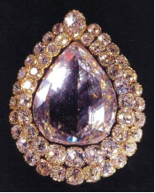

Türk tarihinin en ünlü ve değerli mücevherlerinden biri olan Kaşıkçı Elması’nın kökeni hakkında çeşitli hikayeler varsa da bunların hangisinin gerçek, hangisinin rivayet olduğu tarihin sis bulutları arasında saklı kalmaktadır.
18. yüzyıl Osmanlı vakanüvislerinden Mehmet Raşit Efendi’nin aktardığı hikaye albenisi açısından ilgi çekici görünse de gerçek olma olasılığı en düşük hikayelerden biridir:
1699 yılında İstanbul’da Eğrikapı çöplüğünde dolaşan baldırıçıplak takımından bir adam yuvarlak taş bulur. Bir yaymacı kaşıkçıya giderek taşı üç tahta kaşığa değişir. Kaşıkçı götürür, bu taşı bir kuyumcuya 10 akçeye satar. Kuyumcu taşı arkadaşlarından birine gösterir; kıymetli bir elmas olduğu anlaşılınca beriki sus payı ister. Aralarında kavga çıkar. Mesele Kuyumcubaşı’ya akseder. Kuyumcubaşı kavgacıların eline birer kese akçe vererek taşı alır. Fakat bu sefer de olayı sadrazam Köprülüzade Fazıl Ahmet Paşa duyar, taşı kendisi için satın almaya hazırlanırken, mesele padişaha kadar akseder. Dördüncü Mehmet bir Hatt-ı Hümayun ile elması Saray-ı Hümayun’a getirtir ve elmas saray elmastıraşına teslim edilir. Eğrikapı çöplüğünde bulunan taş işlenince ortaya 86 karatlık nadide bir elmas çıkar. Kuyumcubaşı’ya ‘Kapıcıbaşılık’ rütbesiyle, bir kese bahşiş ihsan olunur.
Dünyanın en büyük 22. elması kabul edilen ve bugün Topkapı Müzesi’nde sergilenen bu elmasa neden “Kaşıkçı Elması” denildiği hakkında muhtelif hikayeler varsa da bunların kaynağı, elmasın kesiminin oval olması ve dolayısıyla da kaşığa benzemesindendir. Elmasın Osmanlı Sarayı’na nasıl girdiği hakkındaki bilgi de, rivayetten öte değildir.
Bir başka rivayet de şöyledir:
1774 yılında Pigot adında bir Fransız subayı bu elması Hindistan’ın Madras Mihracesi’nden satın alıp Fransa’ya götürür. Bir zaman sonra tekrar satılığa çıkartılan elması Napolyon’un annesi satın alır ve uzun süre göğsünde taşır. Ne var ki Napolyon sürgüne gönderildiği zaman, annesi de oğlunu kurtarabilmek için elması mecburen satılığa çıkartır. İşte o sırada, Fransa’da bulunan Tepedelenli Ali Paşa’nın bir adamı, paşa adına 150.000 altın ödeyerek elması satın alır ve paşaya getirir.
Sultan II. Mahmut zamanında, Tepedelenli Ali Paşa devlete karşı ayaklandığı gerekçesiyle öldürülür, paşanın varlıklarına el konulur ve nesi var nesi yoksa Osmanlı hazinesine gönderilir. Böylelikle, Napolyon’un annesinden satın alınan “Kaşıkçı Elması” hazineye girmiş olur.
Kaşıkçı Elması’nın çevresini iki sırahalinde 48 adet küçük ve 1 adet de tepede büyük pırlanta kuşatmaktadır.
1 cm elmasın kütlesi 3,5 gr veya 17,5 karattır. Aşağıdaki resimde tam ortada görülen kocaman Kaşıkçı Elması’nın büyüklüğü ise 86/17,5 = 4.91 cm3 kadardır.

Kaşıkçı Elması (Topkapı Sarayı)
Bilimsel açıdan bakıldığında ikinci hikaye daha akla yatkın görünmektedir, ama ortada net bir kanıt olmadığı için ona da fazla itibar etmemek gerekir...